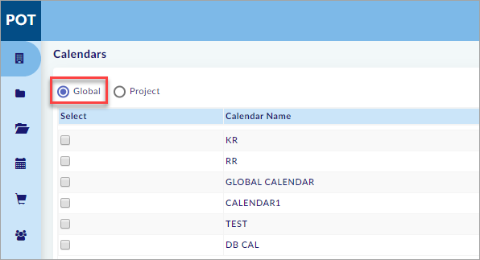
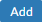
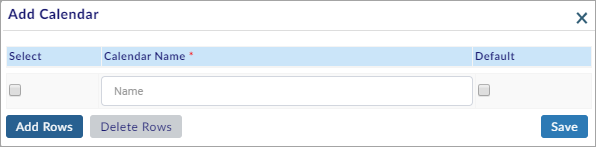
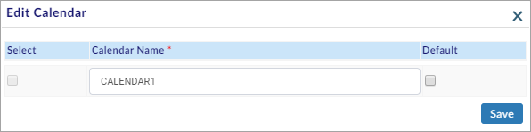
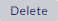
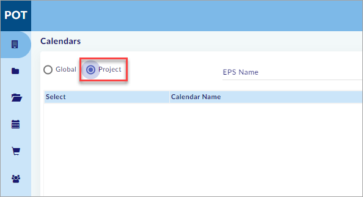
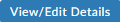
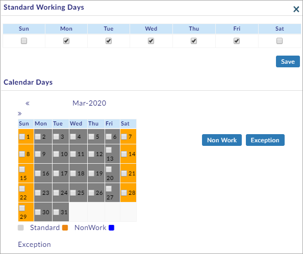
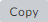
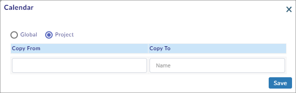

Calendars:
Working Days, Non-Working Days, Exception, etc. are specified in these Calendars. We can use these Calendars in Project Settings (Assign calendar to a project), Schedules (Calculation of Planned Values).
You can perform the following in the Calendars Section:
- Global
- Add a New Global Calendar
- Edit the Global Calendar
- View/Edit the Global Calendar Details
- Delete a Global Calendar
- Project
- Search the Calendars
- Add a New Calendar
- Edit the Calendar
- View/Edit the Calendar Details
- Delete a Calendar
- Copy a Calendar
Global:
This section is used to create Global Calendars.
To create Global Calendars, do the following.
- Select Global as shown in the figure.

Add New Global Calendar:
This sub-section helps you to add a new global calendar.
To add a new calendar, do the following.
- Click  and the Add Calendar window opens as shown in the figure.

- On the Add Calendar window, enter all the mandatory fields.
- Click
 to save the calendar details.
to save the calendar details.
Note:
- Click
 to add multiple calendars.
to add multiple calendars. - Select the calendars and click
 to delete the selected calendars.
to delete the selected calendars. - Select Default if you want to make the selected calendar as the default calendar.
You have successfully added a new global calendar.
Edit Global Calendar:
This sub-section helps you to edit the global calendar.
To edit the calendar, do the following.
- Select the record you need to edit and click
 .
. - The Edit Calendar window opens as shown in the figure.

- Edit the calendar details.
- Click
 to save the edited calendar details.
to save the edited calendar details.
Note:
- Select Default if you want to make the selected calendar as the default calendar.
You have successfully edited the global calendar details.
View/Edit Global Calendar Details:
This sub-section helps you to view/edit the global calendar details.
To view/edit the calendar details, do the following.
- Select the record you need to view/edit and click
 .
. - The Standard Working Days window opens as shown in the figure.

- On the Standard Working Days window, do the following.
- Select the standard working days.
- Select the non-working days on the calendar and click
 .
. - Select the exceptional days on the calendar and click
 .
. - Click
 to save the calendar details.
to save the calendar details.
You have successfully viewed/edited the global calendar details.
Delete Global Calendar:
This sub-section helps you to delete a global calendar.
To delete a calendar, do the following.
- Select the calendar you need to delete and click .
- A Warning window opens.
- Click
 if you want to delete.
if you want to delete. - A confirmation Info window opens.
You have successfully deleted the global calendar.
Note:
- On the Warning window, click
 if you do not want to delete the calendar.
if you do not want to delete the calendar. - The calendar that is assigned to a project cannot be deleted.
Project:
This section is used to create Calendars specific to a Project.
To create Calendars specific to a Project, do the following.
- Select Project as shown in the figure.

Search Calendars:
This sub-section helps you to search the created calendars.
To search the created calendars, do the following.
- Select EPS Name or Project Name and select the project.
- Click Search available on the right side of the screen.
- The calendars are shown on the screen.
Note:
- Click Reset to reset the screen to the default view.
You have successfully searched and viewed the calendars.
Add New Calendar:
This sub-section helps you to add a new calendar.
To add a new calendar, do the following.
- Click and the Add Calendar window opens as shown in the figure.

- On the Add Calendar window, enter all the mandatory fields.
- Click
 to save the calendar details.
to save the calendar details.
Note:
- Click
 to add multiple calendars.
to add multiple calendars. - Select the calendars and click
 to delete the selected calendars.
to delete the selected calendars. - Select Default if you want to make the selected calendar as the default calendar.
You have successfully added a new calendar.
Edit Calendar:
This sub-section helps you to edit the calendar.
To edit the calendar, do the following.
- Select the record you need to edit and click
 .
. - The Edit Calendar window opens as shown in the figure.

- Edit the calendar details.
- Click
 to save the edited calendar details.
to save the edited calendar details.
Note:
- Select Default if you want to make the selected calendar as the default calendar.
You have successfully edited the calendar details.
View/Edit Calendar Details:
This sub-section helps you to view/edit the calendar details.
To view/edit the calendar details, do the following.
- Select the record you need to view/edit and click .
- The Standard Working Days window opens as shown in the figure.

- On the Standard Working Days window, do the following.
- Select the standard working days.
- Select the non-working days on the calendar and click .
- Select the exceptional days on the calendar and click .
- Click
 to save the calendar details.
to save the calendar details.
You have successfully viewed/edited the calendar details.
Delete Calendar:
This sub-section helps you to delete a calendar.
To delete a calendar, do the following.
- Select the calendar you need to delete and click
 .
. - A Warning window opens.
- Click
 if you want to delete.
if you want to delete. - A confirmation Info window opens.
You have successfully deleted the calendar.
Note:
- On the Warning window, click
 if you do not want to delete the calendar.
if you do not want to delete the calendar. - The calendar that is assigned to a project cannot be deleted.
Copy Calendar:
This sub-section helps you to copy a calendar.
To copy a calendar, do the following.
- Click  and the Calendar Window opens as shown in the figure.

- Select Global, and then select Copy From to copy a calendar from global calendars.
- Select Project, and then select Copy From to copy a calendar from project specific calendars.
- Enter the name for the copied calendar in the Copy To text box.
- Click
 and the calendar is copied and saved.
and the calendar is copied and saved.
You have successfully copied the calendar.
Created with the Personal Edition of HelpNDoc: Easily create Qt Help files